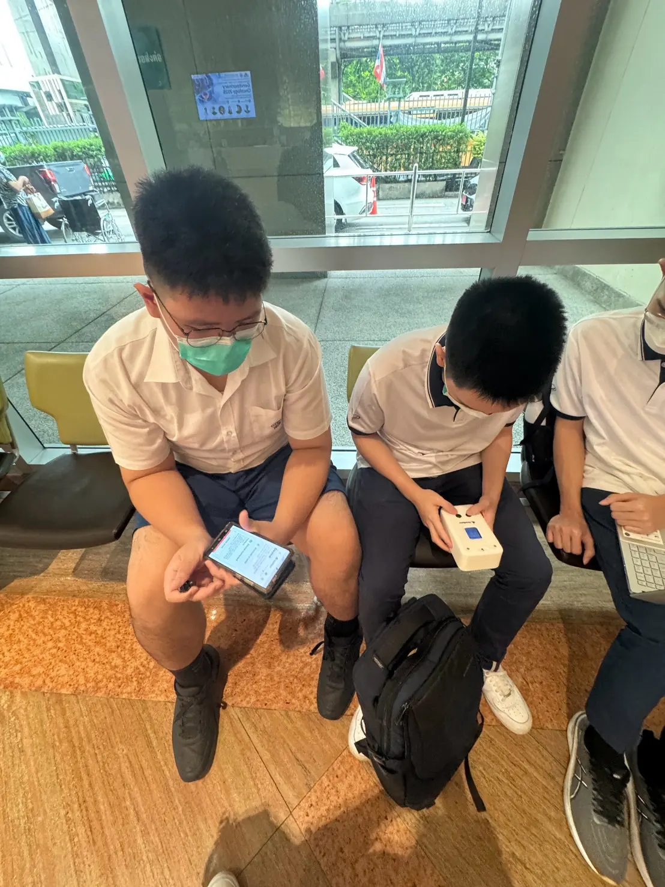
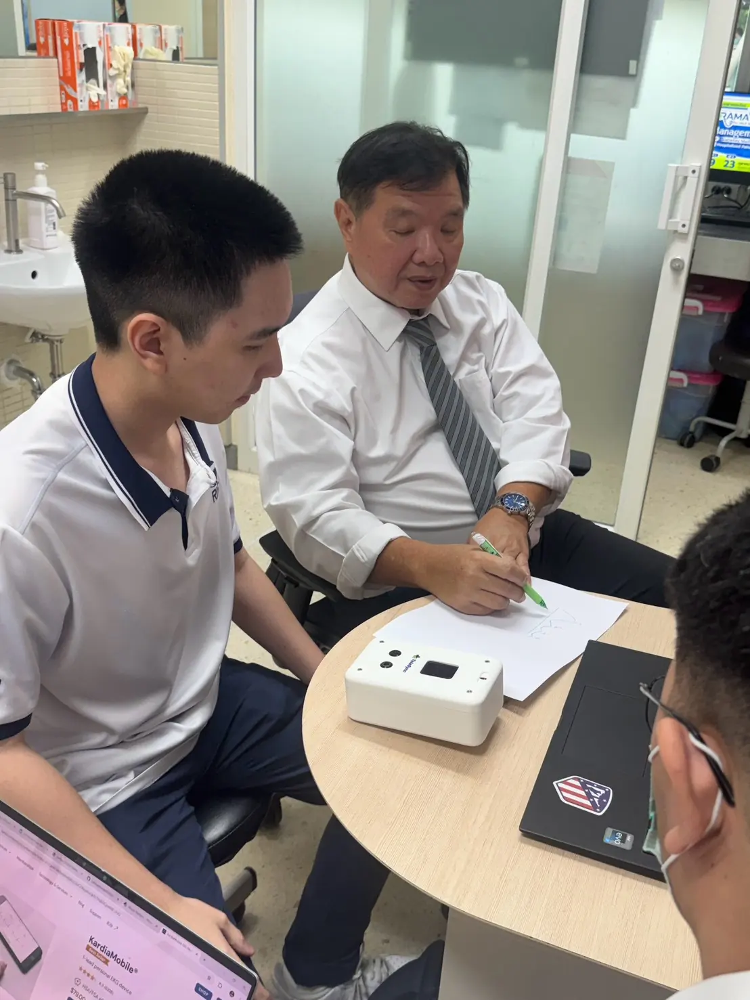
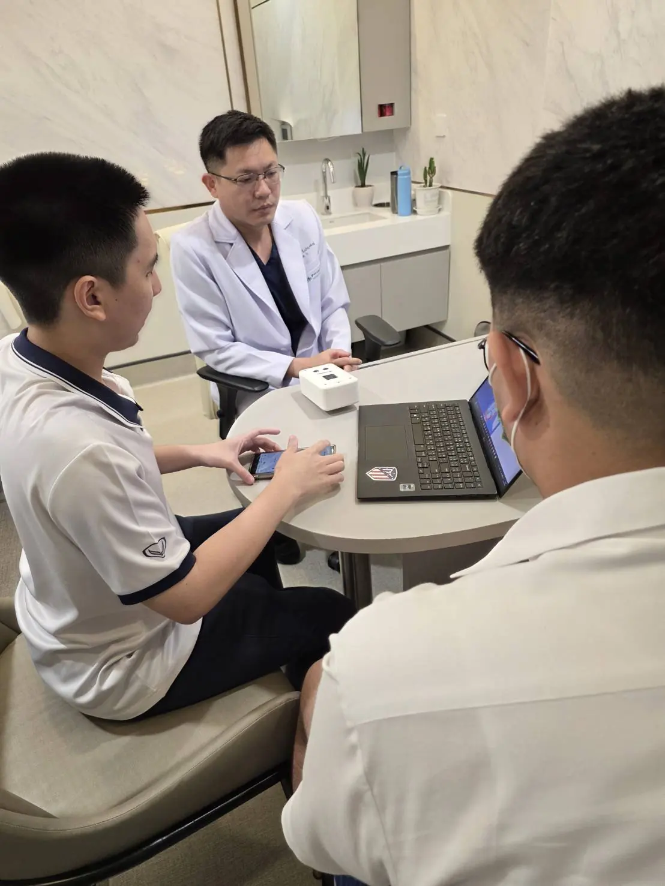
Why TeleSync Matters
Telemedicine connects patients to a doctor, but not to a stethoscope. We took our prototype into hospital consultation rooms to put that gap in front of the clinicians who face it every day.
Care is out of reach for billions
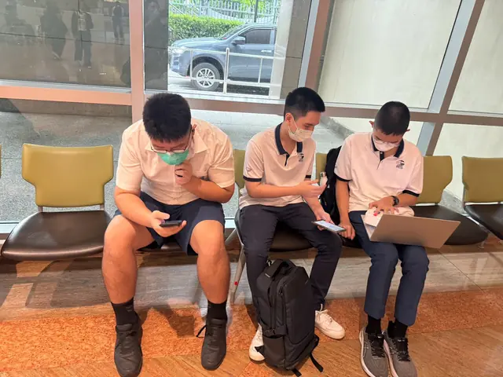
Access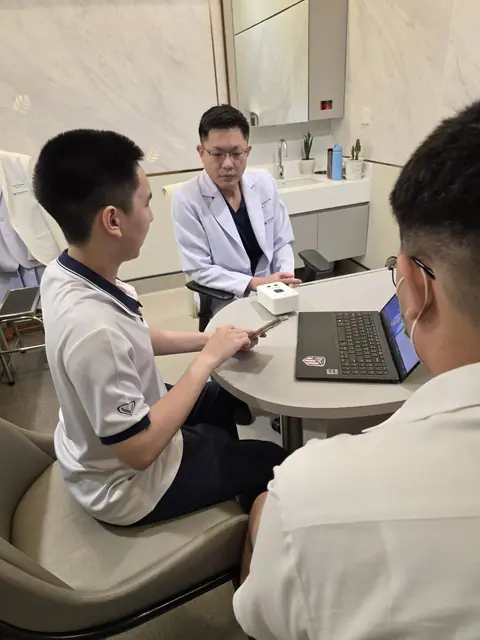
Workforce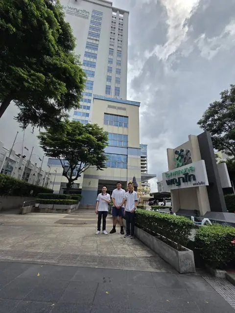
Rural careSources: World Health Organization (2019, 2025); Pagaiya et al. (2015). See references.
From our bench to the consultation room
We brought the working prototype to hospital clinicians so the people who would use it could hold it, question it and help shape what comes next.
-
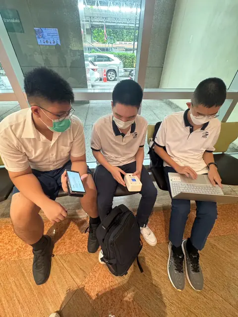
01PrepareLast checks on the device and app before meeting clinicians
-
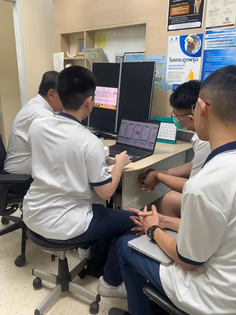
02PresentWalking clinicians through the concept and the guided app
-
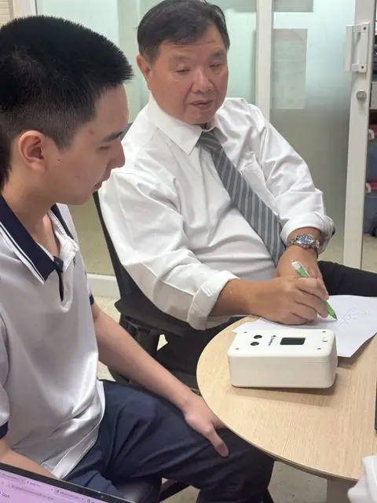
03Hands-onA doctor examines the prototype and sketches ideas
-
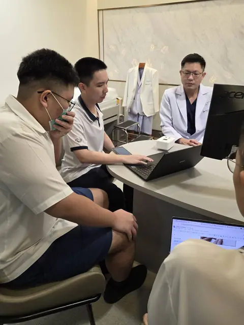
04ListenClinical feedback shapes the next iteration
Putting the examination back into telemedicine
Video call + verbal symptoms
The clinician listens and asks questions, with little objective data to work from.
Vital signs + heart and lung sounds
Measurements and recordings captured through a guided, repeatable workflow.
- Communication without examination
- Incomplete or inaccurate measurements
- Deterioration recognised too late
Moments from our hospital visits
Tap any photo to view it full size.


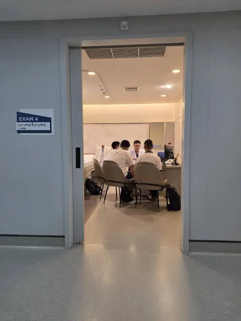
Through the exam-room door, mid-session
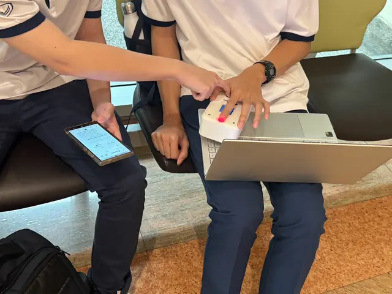
Checking the app against the device
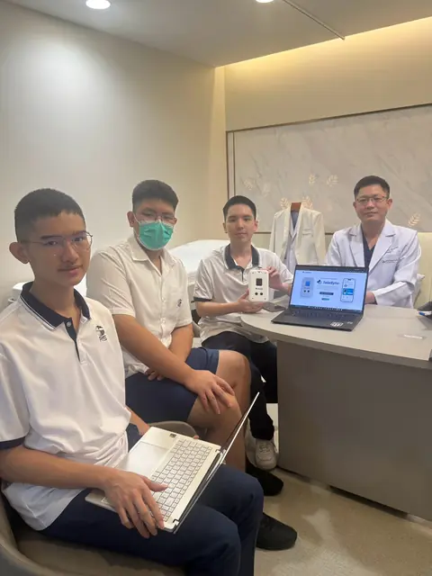
The team and a clinician with the prototype
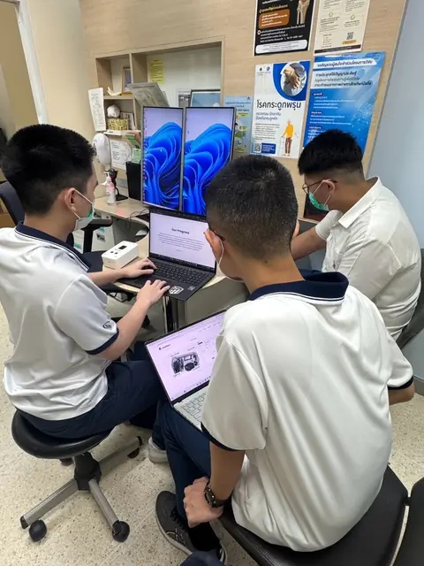
Presenting in the consultation room
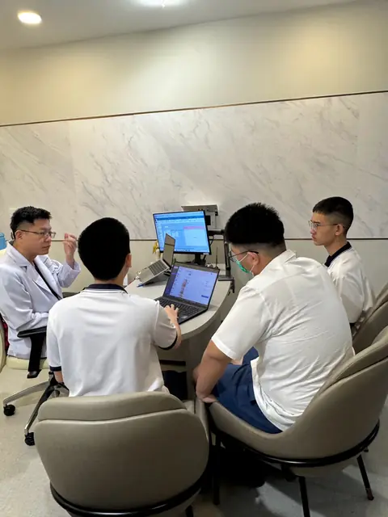
Talking through the app with a clinician
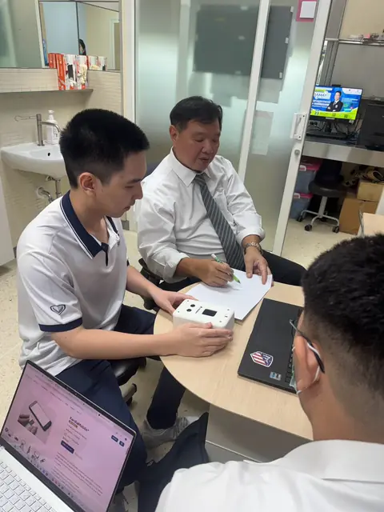
Discussing the device design
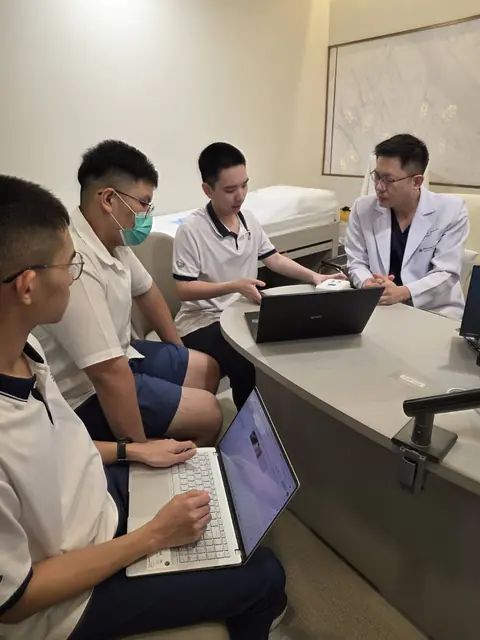
Taking notes during feedback
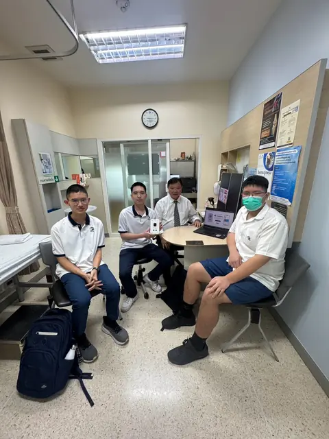
Debrief in the consultation room
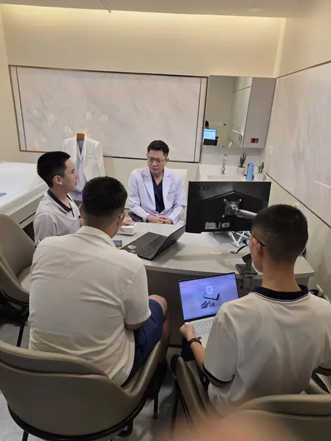
A full consultation-room session
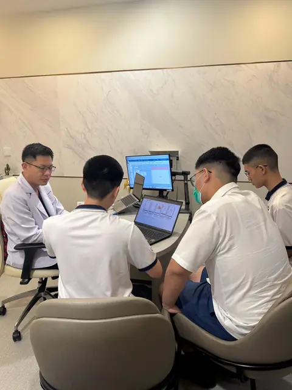
Working through questions together
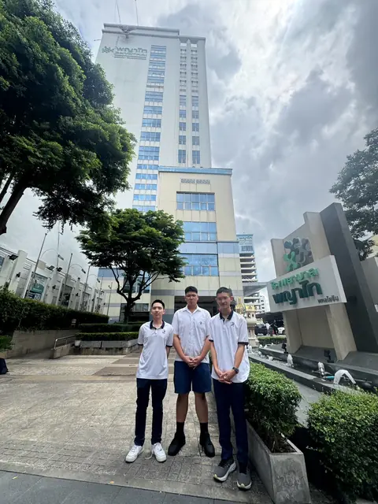
Outside the hospital after the visitBuilt for people far from care
- Rural communities
- Older and homebound adults
- Recently discharged patients
- Chronic heart and lung patients
Expected outcomes
- More objective information in remote consultations
- Faster preliminary assessment and escalation
- Better follow-up after discharge and at home
- Improved access to clinical support in rural areas
- Fewer unnecessary trips to hospital
- Stronger links between patients, caregivers and clinicians
Bringing the examination to people
A portable device and ordinary smartphones that keep working offline. Hospitals can lend TeleSync to patients and provincial authorities can deploy it in rural clinics, so no one needs to buy a device outright.
See our deployment models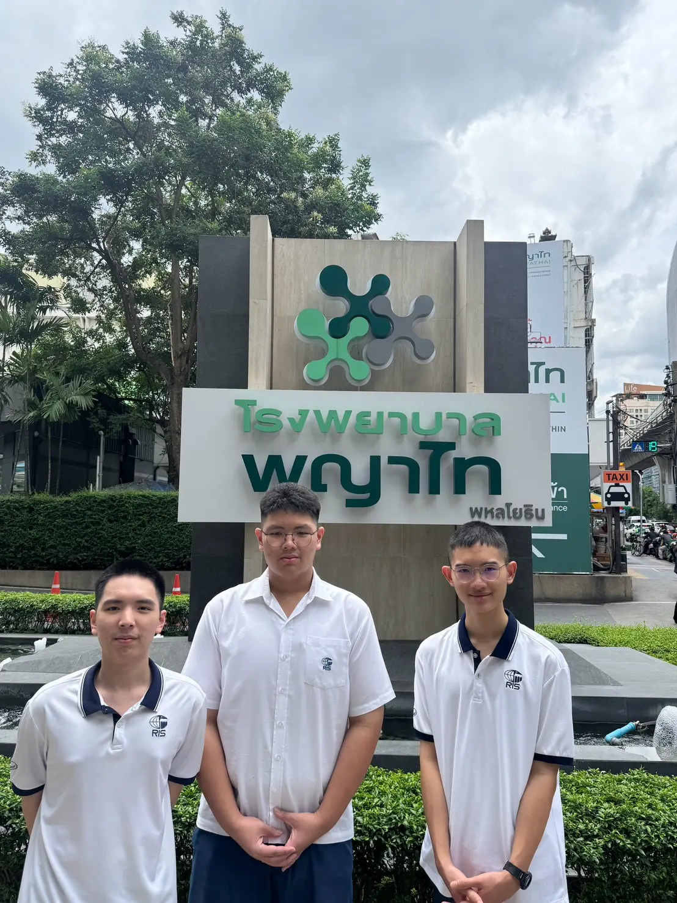